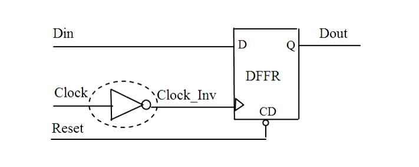

| Description | No inverters should be on the clock path of a pre-layout netlist except the particular clock-tree buffer. Having a buffer or an inverter on a clock path before clock-tree insertion increases clock tree insertion runtime. If you are checking a post-layout netlist, you can deselect this rule, since it no longer applies. |
| Policy | DESIGN |
| Ruleset | CLOCKS |
| Language | VHDL/Verilog |
| Type | Hardware |
| Severity | Error |
This is an example of invalid Verilog code, followed by a circuit diagram that illustrates the problem:
module ntl_clk14_top (Clock, Reset, Din, Dout); input Clock, Reset, Din; output Dout; reg Dout; wire Clock_Inv; not I0(Clock_Inv, Clock); // NTL_CLK14 fires --inverter on clock path //DFFR -- flip-flop with reset DFFR I1(.D(Din), .CP(Clock_Inv), .CD(Reset), .Q(Dout)); ... endmodule